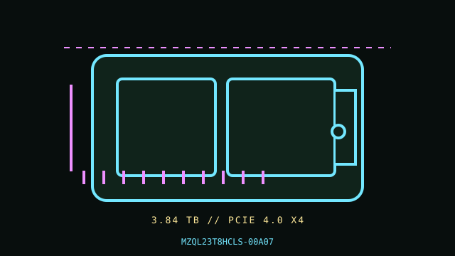

[ PCIE 4.0 NVME // IDENTIFIED PRODUCT ]
Samsung PM9A3 3.84 TB U.2 (MZQL23T8HCLS-00A07)
Product-specific catalog record for the manufacturer code below. Performance figures are manufacturer-rated values, not independent test results.

IDENTIFY THE EXACT SKU: Compare the full MPN, label suffix, form factor, firmware and any OEM/security code before applying these notes. Family variations, capacity changes and factory thermal assemblies can materially change ratings and compatibility.
Manufacturer-identified specifications
| Product / MPN | Samsung PM9A3 3.84 TB U.2 (MZQL23T8HCLS-00A07) — MZQL23T8HCLS-00A07 |
|---|---|
| Capacity / form factor | 3.84 TB; 2.5-inch U.2 enterprise drive, 15 mm class. |
| Interface / lane width | PCIe 4.0 x4 over U.2. |
| Protocol | NVMe 1.3c. |
| Rated performance / endurance | Samsung’s PM9A3 product page specifies up to 6,800 MB/s sequential read for the family. Capacity-specific write and endurance ratings are not generalized here; consult the exact U.2 datasheet line for this MPN. |
| Heatsink / revision caveat | Enterprise 2.5-inch U.2 enclosure with no separate heatsink; airflow is provided by the qualified server carrier/bay. A common 2.5-inch appearance does not imply SATA/SAS compatibility. Confirm complete MPN, OEM firmware and service qualification from the drive label and system parts list. |
Compatibility, installation & service
- Check the server service manual and backplane labels for U.2 NVMe support, x4 PCIe wiring, carrier, 15 mm height, power and approved firmware. Hot removal is appropriate only if the platform, controller and OS explicitly support it and data is safely quiesced.
- Record exact part number, serial, OEM firmware, NVMe health and host logs; back up data and follow the server vendor’s array rebuild and drive-replacement procedure. Keep the carrier airflow path clear for sustained enterprise workloads.
- Confirm host boot qualification and operating-system NVMe support from the server manual; physical insertion into a 2.5-inch tray does not establish compatibility.
- Before replacement, verify backup integrity, encryption keys, firmware settings and controller state. Use electrostatic-discharge precautions and never hot-remove unless the host documentation explicitly supports it.
Manufacturer references
- Samsung PM9A3 — manufacturer product specifications and form-factor documentationOfficial product-family reference. Its page identifies Gen4 performance and U.2; confirm the 3.84 TB capacity row and full MZQL23T8HCLS-00A07 suffix against the linked product datasheet and system OEM qualification.
- NVM Express — specificationsProtocol standards reference; it does not establish product-specific features or host boot support.
- PCI-SIG — PCI Express specificationsInterface generation/lanes standards reference, not a substitute for the host motherboard/server manual.
Manufacturer peak ratings reflect stated test conditions and may not represent sustained writes in a thermally constrained host. Confirm current regional support, system qualification and warranty terms before use.